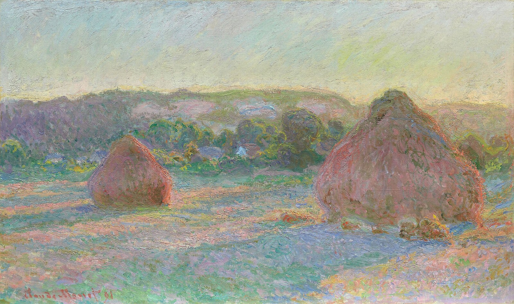
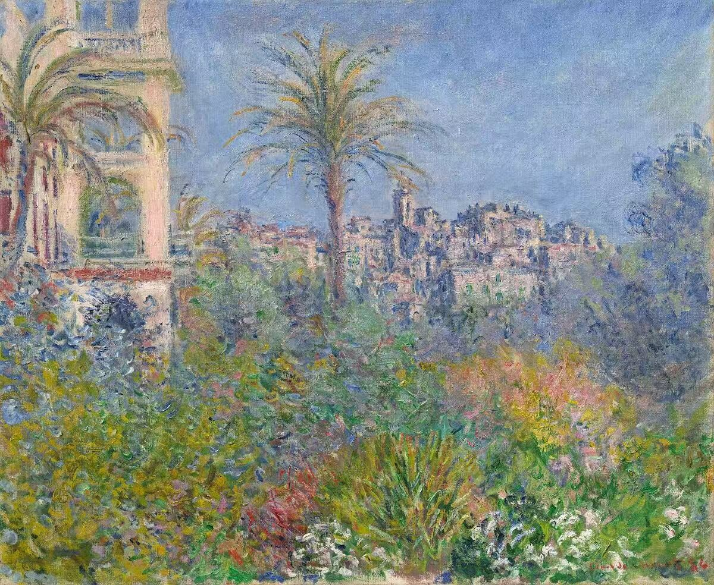
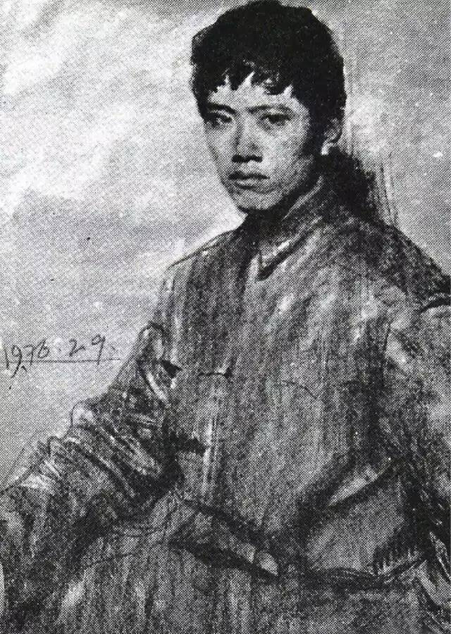

A Small Gallery of Looking
The homepage gallery comes before the academic and engineering material for a reason: art is the starting point here. This page keeps short notes on the works currently in rotation and will expand with the gallery.
Monet's Wheatstacks

Monet painted his wheatstacks near Giverny around 1890-91, returning to the same simple subject under different light and weather. The scene does not need a dramatic event. It is just a field, a stack, and a horizon, but the color keeps changing the whole mood.
The color is the main point here. At close range, a small patch can look noisy, almost messy. From a distance, everything falls into place. The colors balance each other so well that the whole painting reads as calm and coherent.
Monet in Bordighera

Monet visited Bordighera on the Italian Riviera in 1884. Compared with the wheatstacks, this painting is fuller and brighter: palms, walls, blue sky, and dense green vegetation packed into one view. The stronger color makes sense here. The subject itself is more alive, more natural, and more abundant.
A Young Danqing Chen

This portrait is from a very different context. Baoyuan Xia painted Danqing Chen in 1976, before Chen became widely known for the Tibetan Series, his essays, and his public art criticism. The image catches him as a young artist, before the later public image.
Danqing Chen's significance also extends beyond painting. His portraits and realist works are strong, but his writing and public conversations about life, taste, education, and self-reflection are just as important. Local Perspective (局部) is one of his best podcasts.
To be continued as the homepage gallery changes.
Further viewing: Art Institute of Chicago, Musee d'Orsay, Vistopia, Danqing Chen biography.